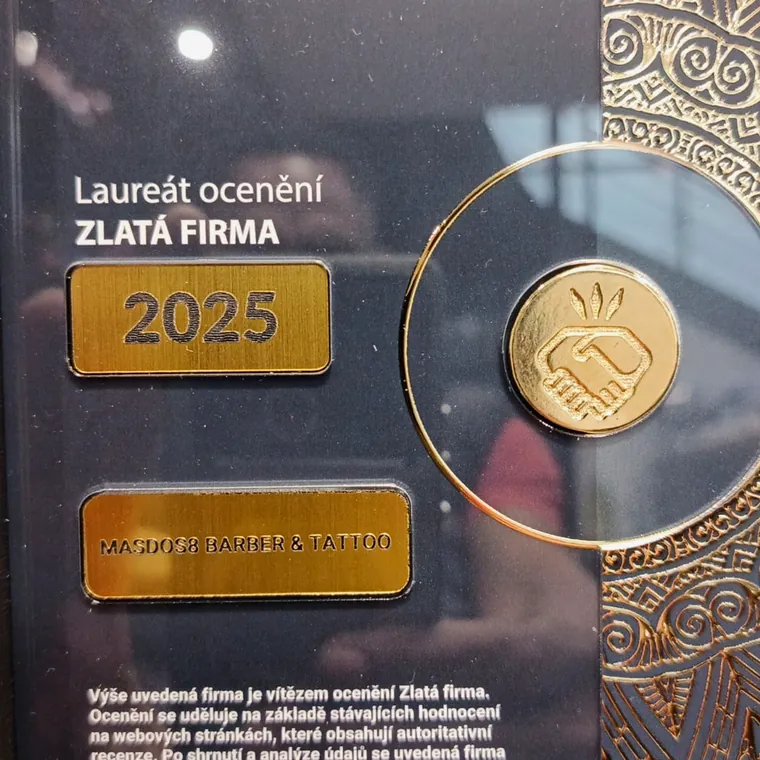

Shop 8, the web guideline
Every token and every component this site owns, in every state, on one page. Four pages already share it: barbershop, tattoo, permanent makeup and the story. They are generated from one template by tools/shop8.mjs and they all link shop-8/app.css, which is the file this page is rendering from, so nothing here can quietly drift away from the site.
Colour
Paper and ink, with the gold sampled from the MasDos8 logo. The site runs light and turns dark twice on purpose: the stage on the left, and the footer at the end. Those are the only dark grounds, and everything in between is paper.
Roles
| Token | Value | Means | Never |
|---|---|---|---|
--paper | #EDE7DC | The page, and every reading surface on it. | Text, except on the two dark grounds |
--paper2 | #E2DACC | A panel that needs to lift slightly off the page. | Large areas, or two steps deep |
--ink | #14120F | Everything you read, and the fill of the switcher button. | Decoration |
--ink-d | #6A6459 | The supporting line: a caption, a credit, a service description. | A price, a heading, a button label |
--gold | #C79A2E | A fill you press, and gold as text on the two dark grounds. | Text on paper. It measures 2.11 there and it fails |
--gold-l | #E3BA5A | The hover of a gold fill. | A fill at rest |
--gold-d | #7E5C10 | Gold as text on paper: the emphasis inside a heading, a big number, a step count. | A fill |
--bk | #0E0D0C | The stage and the footer. The two dark grounds, and there are no others. | A section in the middle of the page |
--bk2 | #171514 | A panel on a dark ground: the switcher menu. | Paper |
--ln | rgba(20,18,15,.16) | A hairline that separates. | A border that carries meaning |
They are the same colour at three lightnesses because paper and near-black cannot take the same one. Press-me is --gold, read-me on paper is --gold-d. Putting --gold on paper as text is the single easiest mistake to make here, and it is the one that fails.
Swatches
Computed contrast
Every pair the site actually puts together, measured rather than judged. WCAG AA wants 4.5 for body text and 3.0 for large text and controls.
| Foreground | On | Ratio | Verdict |
|---|---|---|---|
--ink | --paper | 15.19 | AAA |
--ink | --paper2 | 13.47 | AAA |
--ink-d | --paper | 4.77 | AA |
--gold-d | --paper | 4.98 | AA |
--gold-d | --paper2 | 4.42 | AA large |
--paper | --bk | 15.78 | AAA |
--paper | --bk2 | 14.79 | AAA |
--gold | --bk | 7.48 | AAA |
--gold | --bk2 | 7.01 | AAA |
--ink | --gold (button rest) | 7.20 | AAA |
--ink | --gold-l (button hover) | 10.18 | AAA |
--gold | --paper | 2.11 | Fails, and this is why --gold-d exists |
Type
Zodiak is a modern antique, a serif with a blade to it, and it does every heading in capitals along with every number. Cabinet Grotesk carries the reading text and the buttons. The reason Zodiak takes the prices is that it has lining figures, so a column of them sits on one line instead of hopping about the way old-style figures do.
| Role | Family | Weight | Size | Line | Case | Measure |
|---|---|---|---|---|---|---|
| Stage title | Zodiak | 900 | clamp(44, 6vw, 96) | .96 | As written | Two or three words |
Step heading h2 | Zodiak | 900 | clamp(28, 3.6vw, 58) | .98 | Upper | 16ch |
The one big line .big b | Zodiak | 900 | clamp(44, 7.4vw, 124) | .92 | As written | Three words |
Price .led b | Zodiak | 700 | 23 | 1 | Figures | Tabular |
Fact .facts b | Zodiak | 900 | clamp(28, 3.2vw, 46) | 1 | Figures | Tabular |
| Body | Cabinet Grotesk | 400 | 16.5 | 1.6 | Sentence | 50ch, set by .tx |
Button .bt | Cabinet Grotesk | 700 | 13 | 1 | Upper, .11em | Three words maximum |
Label .qs cite, .end h4 | Cabinet Grotesk | 700 | 10.5 to 11.5 | 1.6 | Upper, .14 to .2em | Four words |
| Nav link | Cabinet Grotesk | 400 | 16 | 1 | Sentence | One or two words |
Zodiak takes headings and figures. Cabinet takes everything you read in a run. A price set in Cabinet, or a paragraph set in Zodiak, is a bug rather than a choice.
Everything we do, with the price
A cut, a shave, and a drink while you wait. We will take our time over it, and you will know the price before you sit down.
Scales, each with a ceiling
Space
The scrolling column has one inset, and every step uses it. A step never indents itself, and the photo strip is the single element allowed to break the inset, on the right only, so it runs off the edge of the screen and reads as draggable.
Radius, ceiling zero
Nothing on this site has a rounded corner. Buttons, panels, photographs, the switcher, the menu, the fields: all square. The one exception is the round MasDos8 logo, which arrived that way. This is the sharpest rule the site has, and it is what keeps it reading as print rather than as an app.
Shadow, ceiling one
There is exactly one shadow in the whole site: 0 26px 60px rgba(0,0,0,.6) under the switcher menu, because it is the only thing that genuinely floats above the page. Everything else separates with a hairline.
Motion budget
| Curve | Value | Used for |
|---|---|---|
| The one curve | --ez: cubic-bezier(.22,.75,.28,1) | Every hover, every transition, the menu opening |
| Linear | linear | One thing only: the six-second drift on the stage photograph |
| Duration | What |
|---|---|
| 180 to 280ms | Hover and press, including the row sliding right under the cursor |
| 500ms | A photograph in the strip scaling up |
| 1s | The stage crossfading between sections. The ceiling |
Rows slide to the right as you hover them, gaining 12px of left padding and going gold. The ledger, the switcher menu and the navigation all do it, so one movement means one thing across the site: this is the row you are on. Every animation is off under prefers-reduced-motion.
Buttons
Three fills. Gold is the action and there is one per surface. Line is for the dark stage, dark is for the paper, and they are the same button in different rooms. All three are .bt, so the 50px height, the uppercase tracking and the square corners are decided once.
| State | What happens |
|---|---|
| Rest | 50px tall, 13px Cabinet 700, .11em uppercase, square, 24px of side padding |
| Hover | Gold lifts 2px and lightens to --gold-l. Line fills with paper and inverts. Dark fills with ink and inverts |
| Focus visible | 2px --gold-d ring, offset 3px, set once for the whole site |
| Active | Inherits hover. No separate press state |
| Disabled | None exists. This site takes no input, so no button can be unavailable |
The service switcher
This is the component the whole site is built around. Three trades share one shop, so a visitor who arrived for a fade has to be able to find the tattoo room without going back to the entrance. It sits at the right of the bar, in the same place, on every page, and it names the room you are currently in.
Closed, then open with the current room marked| State | What happens |
|---|---|
| Closed | Ink fill, gold label, the current room in Zodiak caps |
| Hover, open | Fill goes to pure black, the chevron turns over |
| Item hover | Slides 9px right, ground warms |
| Current room | Lifted ground and a gold dot after the name, plus aria-current="page" |
| Keyboard | Opens on the first item, arrows move, Escape closes and returns focus to the button |
The three services are one array in tools/shop8.mjs. Adding a fourth room writes it into the switcher, the footer and every page at once. There is nowhere to add it twice.
The stage
The left half never scrolls. It holds the photograph, the title of wherever you are in the page, the address, the two proof numbers and the actions, and it crossfades as you move down the right half. On a phone it stops being fixed and becomes the opening screen instead, and nothing else about it changes.
| Part | Rule |
|---|---|
| Photograph | One per step, crossfading over one second, drifting 4% over six |
| Gradient | Fixed three-stop wash so the title and the address stay legible over any photograph |
| Title | Two or three words. It names the section you are reading, never the brand |
| Proof | Exactly two numbers, and both are real: 4.8 from 225 reviews, Golden Company 2025 |
| Actions | Reserve, the phone number, WhatsApp. In that order, on every page |
| Progress | 3px gold, the width of how far down the page you are |
Steps
The right column is a stack of steps and nothing else. Each one has a number in the corner, one heading with a gold phrase inside it, and then exactly one kind of content: a paragraph, a ledger, a photo strip, a pair of plates, a set of quotes or one big line. A step never carries two of them, which is what stops the page turning into a features grid.
Twenty years at the chair
José Luis cuts, shapes and finishes, and he does the tattoos and the permanent makeup as well. The same hands look after you from the first cut to the last.
Spanish for more than two, because in life we are never alone. The eight on its side is infinity.
The ledger
Every price on the site is a ledger row: name on the left, price on the right, a hairline between them. It is the same component for a 100 Kč hair ornament and an 18 000 Kč back piece, which is the point. Pressing a row goes to the booking.
Rest, hover it, with and without a description, four figures, and the longest name on the sitePrices come off the client's own list. Nothing on this site is rounded, estimated or invented, and where their list is unclear the row says what their list says.
Photography
Two treatments and no more. The strip runs sideways, snapping, dragging, and it deliberately runs off the right edge so it is obvious there is more. The pair is two square plates side by side, used for the award and for showing two trades at once.
The strip. Drag it. The pair



| Where | Ratio | Rule |
|---|---|---|
| Stage | Fills the half, focused 22% down | One per step, never repeated inside a page |
| Strip | 3 / 4 | 180 to 260px wide, snapping, cursor grab |
| Pair | 1 / 1 | Hairline, never cropped past the engraving |
Quotes
Three real reviews per page, stacked, each with the name of the person who left it. A gold rule down the left is the only decoration, and there is no card, no avatar and no star row, because the words are the evidence.
"Best barbershop I've been. Jose Luis knows what he is doing, the hair and beard looks amazing."
Rafael Frías
"If you are a man worth your beard, you must visit José. This is the first time I've come out of a barbershop happy."
Swatchhanda Kher
Every quote is copied from their Google profile with the author's name attached. If a section needs a quote and there is not a real one, the section changes.
Component inventory
Every component this site owns, what it is for in one sentence, and where it appears. Two rows with the same sentence would be one component, so there are none.
| Component | Purpose | Variants | Appears on |
|---|---|---|---|
.bt | Take an action | --r --l --d | All four pages, stage and page end |
.sw | Move between the three rooms of the shop from anywhere | open, current | All four pages |
.pnav | Get to any page from any page | none | All four pages |
.stage | Hold the place, the proof and the booking still while the page moves | Static under 900px | All four pages |
.step | Carry one idea and one kind of content | none | All four pages, five or six each |
.led row | Show one service with its price so it can be compared and booked | with or without description | Barber, tattoo, permanent makeup |
.facts item | Give one number that proves something | counting, static | All four pages, stage and steps |
.strip | Show the work as a run of photographs you can drag through | none | Barber, tattoo, permanent makeup |
.pair | Show two photographs that only mean something together | none | About |
.qs quote | Show one real review in the customer's own words | none | All four pages |
.big | Give one idea the whole width, once per page at most | none | About |
.end | Close the page with the address, the hours and the other rooms | none | All four pages |
The one-edit test
The client asks for a change. How many places does it take? If the honest answer is more than one, the system is wrong and every future request carries the same tax.
| The request | Edits | Where |
|---|---|---|
| Make every gold button red | 1 | --gold in app.css, and --gold-l if the hover should follow |
| Change the heading typeface | 1 | The 'Pa' face, one @font-face pair |
| Make prices a different colour | 1 | One rule, .led a b, which every price on three pages uses |
| Round the corners on everything | 1 | There is no radius to unpick. One rule adds it |
| Change the phone number | 1 | It is written once in tools/shop8.mjs per surface, and the page count does not matter |
| Add a fourth room to the shop | 1 | One entry in SERVICES, which writes the switcher, the footer and the page |
| Reword every step heading | 1 | The PAGES object. No heading is written in HTML |
These four pages are one template. There is no per-page stylesheet and no page-level override block, which is the only reason the tattoo page and the barbershop page cannot drift apart.